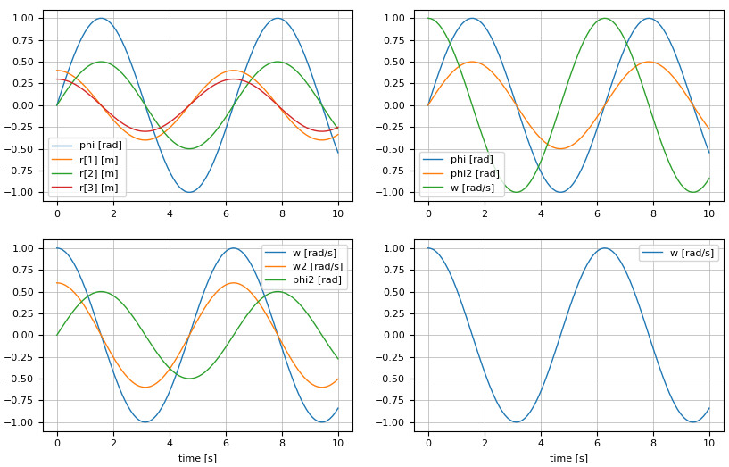

Line Plots
The functions below are used to plot one or more signalTable signals in one or more diagrams within one or more windows (figures), and save a window (figure) in various formats on file (e.g. png, pdf). The functions below are available after
using SignalTables # Make Symbols available
@usingPlotPackage # Define used Plot package (expands e.g., into: using PlotPackage_PyPlot)or
using Modia
@usingPlotPackagehave been executed. The documentation has been generated with SignalTablesInterface_PyPlot.
SignalTables.jl exports all symbols of the table.
Modia.jl reexports all symbols and uses as signalTable argument instantiatedModel.
| Line plot functions | Description |
|---|---|
plot | Plot signals from a signal table in multiple diagrams/figures. |
saveFigure | Save figure in different formats on file. |
closeFigure | Close one figure |
closeAllFigures | Close all figures |
showFigure | Show figure in window (only GLMakie, WGLMakie) |
SignalTablesInterface_PyPlot.plot — Functionplot(signalTable, names;
heading = "", grid = true, xAxis = nothing,
figure = 1, prefix = "", reuse = false, maxLegend = 10,
minXaxisTickLabels = false,
MonteCarloAsArea = true)Generate line plots of selected signals of a signal table using the plot package defined with [@usePlotPackag]@ref(xxx). Possible values for xxx: "GLMakie", "WGLMakie", "CairoMakie", "PyPlot", "SilentNoPlot").
signalTable is an instance of a type that supports the Abstract Signal Table Interface.
Argument names defines the diagrams to be drawn and the signals to be included in the respective diagram:
If
namesis a String, generate one diagram with one time series of the variable with keynames.If
namesis a Tuple of Strings, generate one diagram with the time series of the variables with the keys given in the tuple.If names is a Vector or a Matrix of Strings and/or Tuples, generate a vector or matrix of diagrams.
Note, the names (and their units, if available in the signals) are automatically used as legends in the respective diagram.
A signal variable identified by a String key can be a scalar of type <:Number or an array of element type <:Number. A signal is defined by a vector of time values, a corresponding vector of signal values, and the signal type (continuous or clocked).
Note, before passing data to the plot package, it is converted to Float64. This allows to, for example, also plot rational numbers, even if not supported by the plot package. Measurements.Measurement{xxx} and MonteCarloMeasurements is specially handled.
Optional Arguments
heading::AbstractString: Optional heading above the diagram.grid::Bool: = true, to display a grid.xAxis::Union{AbstractString,Nothing}: Name of x-axis. IfxAxis=nothing, the independent variable of the signal table (usually"time"is used as x-axis.figure::Int: Integer identifier of the window in which the diagrams shall be drawn.prefix::AbstractString: String that is appended in front of every legend label (useful especially ifreuse=true).reuse::Bool: If figure already exists and reuse=false, clear the figure before adding the plot. Otherwise, include the plot in the existing figure without removing the curves present in the figure.reuse = trueis ignored for"WGLMakie"(because not supported).maxLegend::Int: If the number of legend entries in one plot command> maxLegend, the legend is suppressed. All curves have still their names as labels. In PyPlot, the curves can be inspected by their names by clicking in the toolbar of the plot on buttonEdit axis, curve ..and then onCurves.minXaxisTickLabels::Bool: = true, if xaxis tick labels shall be removed in a vector or array of plots, if not the last row (useful when including plots in a document). = false, x axis tick labels are always shown (useful when interactively zooming into a plot).MonteCarloAsArea::Bool: = true, if MonteCarloMeasurements values are shown with the mean value and the area between the minimum and the maximum value of all particles. = false, if all particles of MonteCarloMeasurements values are shown (e.g. if a value has 2000 particles, then 2000 curves are shown in the diagram).
Examples
using SignalTables
using Unitful
# Generate "using xxx" statement
# (where "xxx" is from a previous SignalTables.usePlotPackage("xxx"))
@usingPlotPackage
# Construct result data
t = range(0.0, stop=10.0, length=100);
result = Dict{String,Any}();
result["time"] = t*u"s";
result["phi"] = sin.(t)*u"rad";
result["w"] = cos.(t)*u"rad/s";
result["a"] = 1.2*sin.(t)*u"rad/s^2";
result["r"] = hcat(0.4 * cos.(t), 0.5 * sin.(t), 0.3*cos.(t))*u"m";
# 1 signal in one diagram (legend = "phi [rad]")
plot(result, "phi")
# 3 signals in one diagram
plot(result, ("phi", "w", "a"), figure=2)
# 3 diagrams in form of a vector (every diagram has one signal)
plot(result, ["phi", "w", "r"], figure=3)
# 4 diagrams in form of a matrix (every diagram has one signal)
plot(result, ["phi" "w";
"a" "r[2]" ], figure=4)
# 2 diagrams in form of a vector
plot(result, [ ("phi", "w"), ("a") ], figure=5)
# 4 diagrams in form of a matrix
plot(result, [ ("phi",) ("phi", "w");
("phi", "w", "a") ("r[2:3]",) ],figure=6)
# Plot w=f(phi) in one diagram
plot(result, "w", xAxis="phi", figure=7)
# Append signal of the next simulation run to figure=1
# (legend = "Sim 2: phi [rad]")
result["phi"] = 0.5*result["phi"];
plot(result, "phi", prefix="Sim 2: ", reuse=true)Example of a matrix of plots:

SignalTablesInterface_PyPlot.saveFigure — FunctionsaveFigure(figure, file; kwargs...)Save figure on file. The file extension defines the image format (for example *.png).
| Plot package | Supported file extensions |
|---|---|
| GLMakie | png, jpg, bmp |
| WGLMakie | png |
| CairoMakie | png, pdf, svg, eps |
| PyPlot | depends on backend (usually: png, pdf, jpg, tiff, svg, ps, eps) |
| SilentNoPlot | Call is ignored |
Keyword arguments
- resolution: (width::Int, height::Int) of the scene in dimensionless units (equivalent to px for GLMakie and WGLMakie).
Example
using SignalTables
@usingPlotPackage
...
plot(..., figure=1)
plot(..., figure=2)
saveFigure(1, "plot.png") # save in png-format
saveFigure(2, "plot.svg") # save in svg-formatSignalTablesInterface_PyPlot.closeFigure — FunctioncloseFigure(figure)Close figure.
SignalTablesInterface_PyPlot.closeAllFigures — FunctioncloseAllFigures()Close all figures.
SignalTablesInterface_PyPlot.showFigure — FunctionshowFigure(figure)| Plot package | Effect |
|---|---|
| GLMakie | Show figure in the single window. |
| WGLMakie | Show figure in the single window. |
| CairoMakie | Call is ignored |
| PyPlot | Call is ignored |
| SilentNoPlot | Call is ignored |
Example
using SignalTables
@usingPlotPackage
...
plot(..., figure=1)
plot(..., figure=2)
plot(..., figure=3)
showFigure(2)
showFigure(1)